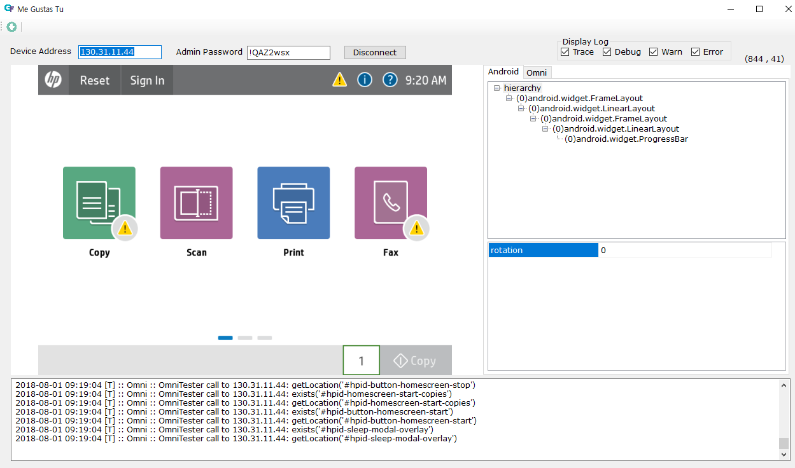
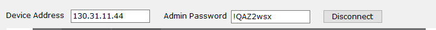
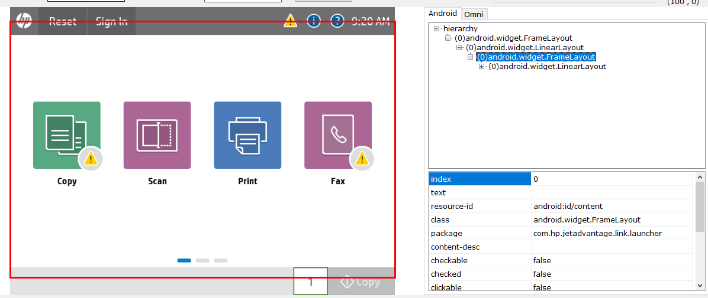
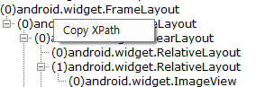
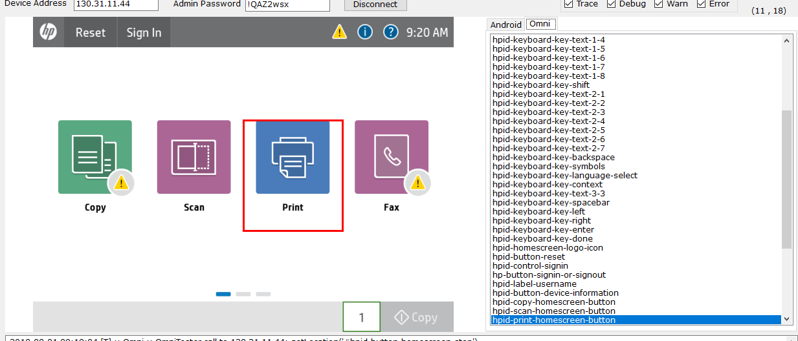

Me Gustas Tu is UI Inspector which helps get Android's UI hierarchy and Jedi Omni's IDs with screen shot.

If you start this tool within GFriend UI, these field will be filled and connect automatically.
NOTE: Disconnect form device by clicking 'Disconnect' button before running test.
You can start UI inspection by clicking button.
Tool will get the screenshot of device, UI hierachy info of Android and list of OmniIDs on current page (if Omni connected.)
You can see the information of object by clicking screenshot in left pane, tree-view (Android) or list item (Omni) in right pane.

If tab of right pane is selected as Android, you can see the android object info.
You can use text property (ex. Touch Text) or resource-id property (Touch ID) in your GFriend Script.
Or you can also use XPath of element in your script. By clicking right mouse button on treeview, you can see the menu of Copy XPath. If you click this XPath of selected element will be copied to clipboard.


If tab of right pane is selected as Omni, you can see the list of Omni IDs.
By clicking mouse right button, you can copy the selected id to clipboard.